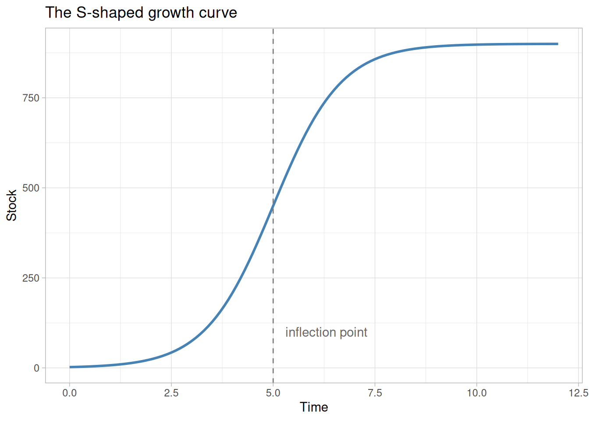
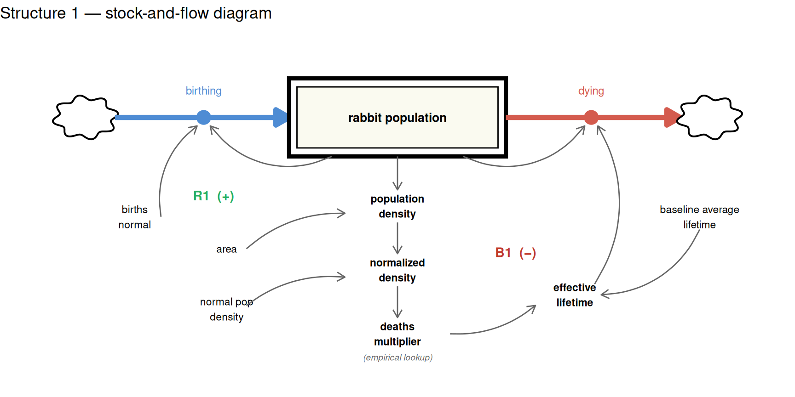
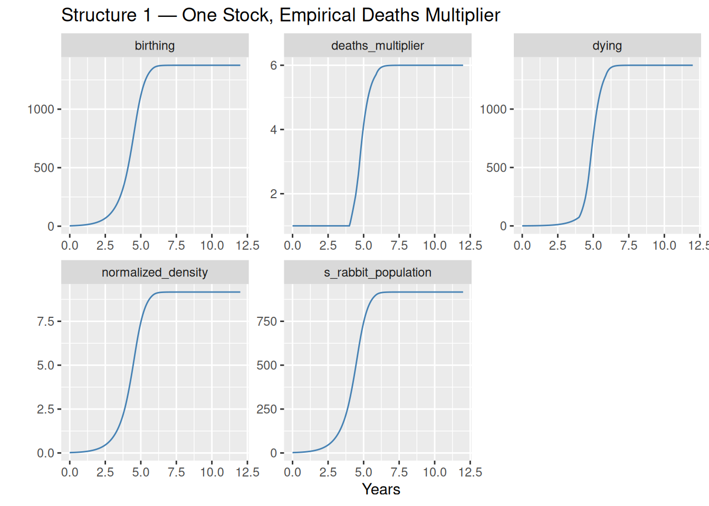
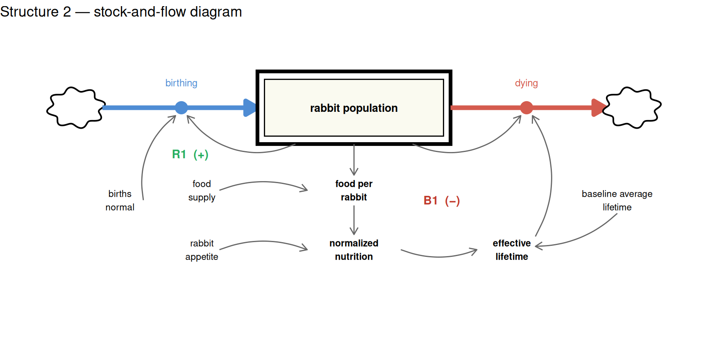
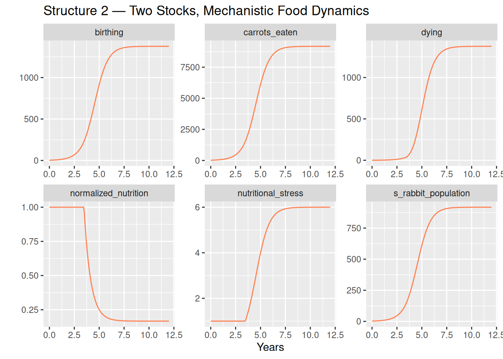

library(deSolve)
library(tidyverse)SD Tutorial 5: S-Shaped Growth
When a dominant positive loop meets a resource constraint
Required R packages
Acknowledgement
The core content behind this tutorial derives from the Road Maps curriculum, developed by the System Dynamics in Education Project (SDEP) at MIT under the direction of Professor Jay Forrester. I’d like to give a personal thanks to Lees Stutz of the Creative Learning Exchange (CLE) for introducing me to the Road Maps curriculum, and for supporting my own SD journey.
Source material for this tutorial comes from Generic Structures: S-Shaped Growth I (D-4432-2).
S-Shaped Growth
S-shaped growth is one of the most recognisable patterns in nature. A population starts small, accelerates through a phase of rapid expansion, then decelerates and levels off at some ceiling. You see it in rabbit colonies, epidemic curves, technology adoption, and market penetration.

The characteristic shape — convex early, concave late — is not cosmetic. It reflects a transition in the dominant feedback mechanism driving the system. Understanding that transition is the core lesson of this tutorial.
The Feedback Story
S-shaped growth curves are produced by a general underlying dynamic: two feedback loops in competition.
The positive (reinforcing) loop drives the early phase. More of the stock produces more inflow, which increases the stock further. Left alone, this loop produces pure exponential growth.
The negative (balancing) loop is also present from the start, but it is initially weak. It connects the growing stock to some constraint — a resource, a space, an opportunity — that, as it becomes scarce, pushes back against growth by strengthening the outflow.
The S-shape is the story of these two loops trading places:
- Early phase — positive loop dominates; growth accelerates; the curve is convex
- Inflection point — the negative loop has grown strong enough that it begins gaining ground on the positive loop; net growth rate is at its peak
- Late phase — negative loop dominates; growth decelerates; the curve is concave; the system approaches equilibrium
The inflection point is not where the stock stops growing — it is where the rate of growth is highest. Beyond it, each additional unit of stock strengthens the negative loop more than the positive one, and growth winds down.
This tutorial presents two mechanistically different models that both produce S-shaped growth in a rabbit population. The first is simpler; the second is more revealing. Taken together, they demonstrate a fundamental principle of system dynamics:
S-shaped growth is a behavior, not a structure. The same curve can emerge from different underlying mechanisms.
Structure 1: One Stock, Empirical Deaths Multiplier
The Model
The simplest S-shaped structure needs only a single stock — the rabbit population — with two flows: births and deaths.
- Births form a positive loop: more rabbits produce more births, which increase the population further
- Deaths form a negative loop: as the population grows, a density-dependent deaths multiplier increases the death rate
The deaths multiplier is a lookup function (sourced from the Road Maps D-4432-2 documentation) that maps the normalized population density — current population relative to a 100-rabbit baseline — to a multiplier applied to the baseline death rate. At low densities the multiplier is 1 (no effect). Above 3× normal density, it begins to rise steeply, reaching 25 at 20× normal density.
The stock-and-flow diagram below shows the full structure. The double-bordered rectangle is the stock. Thick arrows are flows (births in, deaths out). Connector arrows are information links. Loop labels mark the two competing feedback loops.

The diagram deliberately keeps things simple — it shows the essential story. The R model below is more complete. To make the simulation run, several additional elements are needed that the diagram omits for clarity.
The most important addition is a way to quantify survival pressure. The diagram shows it as a concept, but the model needs an actual number — a deaths multiplier — that scales the baseline death rate up or down depending on conditions. This is where empirical research enters. We cannot derive from first principles exactly how much more quickly rabbits die at 5× normal density than at 1× normal density; that relationship has to be measured. The D-4432-2 Road Maps documentation provides exactly this: a table of observed values linking normalised population density to a deaths multiplier, which we encode as a lookup function.
To use that lookup, the model also needs two grounding parameters that turn raw rabbit counts into something meaningful relative to a known baseline:
p_area— the area of land in acres, used to convert population to a densityp_normal_pop_density— the baseline reference density (100 rabbits/acre), representing what we consider “normal” conditions
With these in place, the model can express the current population density as a proportion of that baseline — a normalised density — and feed that ratio into the empirical lookup to read off the corresponding deaths multiplier. When the population is at normal density the multiplier is 1 and deaths proceed at the baseline rate. As the population grows above normal, the multiplier rises, deaths accelerate, and the negative loop gains strength.
START <- 0; FINISH <- 12; STEP <- 0.0625
simtime <- seq(START, FINISH, by = STEP)
# Empirical lookup: normalized density → deaths multiplier (D-4432-2)
deaths_mult_x <- c(0.01, 1, 2, 3, 4, 5, 6, 7, 8, 9, 10, 11, 12, 13, 14, 15, 16, 17, 18, 19, 20)
deaths_mult_y <- c(1, 1, 1, 1, 1.5, 2, 2.7, 3.7, 4.7, 5.7, 7.5, 9, 10.5,12, 14, 17, 19, 21, 23, 24, 25)
deaths_mult_fn <- approxfun(deaths_mult_x, deaths_mult_y, rule = 2)
params_s1 <- c(
p_births_normal = 1.5, # 1/year
p_average_lifetime = 4, # years
p_area = 1, # acres
p_normal_pop_density = 100 # rabbits/acre (normalisation reference)
)model_s1 <- function(time, stocks, params) {
with(as.list(c(stocks, params)), {
a_population_density <- s_rabbit_population / p_area
a_normalized_density <- a_population_density / p_normal_pop_density
a_deaths_multiplier <- deaths_mult_fn(a_normalized_density)
f_births <- s_rabbit_population * p_births_normal
f_deaths <- (s_rabbit_population / p_average_lifetime) * a_deaths_multiplier
ds_dt <- f_births - f_deaths
return(list(c(ds_dt),
births = f_births,
deaths = f_deaths,
normalized_density = a_normalized_density,
deaths_multiplier = a_deaths_multiplier))
})
}We start the simulation with a small founding population of 2 rabbits — enough to seed the positive feedback loop.
sim_s1 <- data.frame(ode(y = c(s_rabbit_population = 2),
times = simtime, func = model_s1,
parms = params_s1, method = "rk4"))sim_s1 %>%
pivot_longer(cols = -time, names_to = "variable", values_to = "value") %>%
mutate(value = as.numeric(value), time = as.numeric(time)) %>%
ggplot(aes(x = time, y = value)) +
geom_line(colour = "steelblue") +
facet_wrap(vars(variable), scales = "free") +
xlab("Years") + ylab("") +
labs(title = "Structure 1 — One Stock, Empirical Deaths Multiplier")
Observations
The population starts near zero, accelerates through an exponential phase as the positive loop dominates, then bends at the inflection point and asymptotically approaches the carrying capacity near 917 rabbits.
The deaths_multiplier panel tells the key story: it is essentially flat at 1 until around year 3–4, when population density crosses 3× normal, and then rises steeply as the population approaches equilibrium. This is the negative loop finding its strength.
What Is the Deaths Multiplier Hiding?
The model works well, but it is worth pausing on what the deaths multiplier actually represents.
The two feedback loops in this structure are:
Positive loop (R1) — Births: \[\text{rabbit population} \xrightarrow{+} \text{births} \xrightarrow{+} \text{rabbit population}\]
Negative loop (B1) — Density-Dependent Deaths: \[\text{rabbit population} \xrightarrow{+} \text{density} \xrightarrow{+} \text{deaths multiplier} \xrightarrow{+} \text{deaths} \xrightarrow{-} \text{rabbit population}\]
The deaths multiplier values — 1 at low density, 6 at the carrying capacity, 25 at extreme density — came from empirical observation documented in D-4432-2. They capture the consequence of overcrowding accurately, but they say nothing about the mechanism. Why does a rabbit die 6 times faster at 9× normal density than at 1× normal density?
The lookup table is silent on this. It is a correlation, not a cause.
Structure 2 answers the question.
Structure 2: One Stock, Mechanistic Food Balance
The Insight
The empirical lookup in Structure 1 told us something important, even if it did not explain itself: survival pressure rises steeply as population density increases. That is a clue, not just a data point. It points to a mechanism — and once you ask why overcrowding increases survival pressure, the answer is straightforward. Overcrowding does not kill rabbits directly. It depletes food. And food scarcity kills rabbits.
You do not need the research data to model this. You only need to understand what the data was reflecting. Once we recognise that the deaths multiplier in Structure 1 was always a compressed representation of food scarcity, the negative feedback loop can be unpacked into an explicit causal chain:
\[\text{rabbit population} \xrightarrow{+} \text{food demand} \xrightarrow{-} \text{food per rabbit} \xrightarrow{-} \text{effective lifetime} \xrightarrow{+} \text{deaths} \xrightarrow{-} \text{rabbit population}\]
Every arrow in this chain is mechanistic. No second stock is needed — the food constraint enters purely through the flow balance. The S-shape emerges entirely from this relationship, with no lookup table required.
The Food Balance
Rather than tracking how much food is physically present in the system, the model asks a more direct question at each time step: can the food supply keep up with current demand?
The answer is expressed through two auxiliaries:
- Food per rabbit — the annual food supply divided by the current rabbit population. As population grows, each rabbit’s share shrinks.
- Normalized nutrition — food per rabbit relative to each rabbit’s appetite. When this ratio falls below 1, the effective lifetime shortens proportionally and deaths accelerate.
The diagram below shows the single stock and the feedback structure. The B1 loop now traces a direct causal path through food availability rather than collapsing into a single empirical node. The food supply parameter (p_replenishment) sits outside the loop — it sets the scale of the constraint without itself changing.

params_s2 <- c(
p_births_normal = 1.5, # 1/year
p_average_lifetime = 4, # years (baseline, when food is adequate)
p_replenishment = 1530, # kg carrot/year (annual food supply)
p_rabbit_appetite = 10 # kg/rabbit/year
)Deaths Without a Lookup Table
Rather than a lookup function, deaths are driven by a single mechanistic equation:
\[f\_deaths = \frac{\text{population}}{\text{p\_average\_lifetime} \times \min(\text{normalised nutrition},\ 1)}\]
When food is at or above each rabbit’s normal ration, the effective lifetime equals the baseline — the multiplier is 1. When food per rabbit falls below the ration, the effective lifetime shortens proportionally, and deaths increase.
The min(..., 1) cap reflects a straightforward biological assumption: food abundance does not extend lifespan below its intrinsic floor. Only scarcity kills sooner.
The food sub-model needs just two parameters, and neither is empirical:
p_replenishment— the annual food supply (kg/year), treated as constant. Carrots grow fresh each year and are fully available; what does not get eaten does not persist. This represents the meadow’s renewable capacity.p_rabbit_appetite— how many kg of carrots each rabbit needs per year at baseline health
Together they define the threshold at which food stress begins: p_replenishment / p_rabbit_appetite = 153 is the population at which per-rabbit supply exactly meets appetite. Above 153, nutrition falls below 1 and the B1 loop tightens. The carrying capacity falls at p_births_normal × p_average_lifetime × 153 = 6 × 153 ≈ 918 — the population where deaths balance births.
model_s2 <- function(time, stocks, params) {
with(as.list(c(stocks, params)), {
# food balance: can supply keep up with demand?
f_carrots_eaten <- s_rabbit_population * p_rabbit_appetite
a_food_per_rabbit <- p_replenishment / max(s_rabbit_population, 0.001)
a_normalized_nutrition <- min(a_food_per_rabbit / p_rabbit_appetite, 1)
# rabbit flows — effective lifetime shortens proportionally with food scarcity
f_births <- s_rabbit_population * p_births_normal
f_deaths <- s_rabbit_population / (p_average_lifetime * a_normalized_nutrition)
ds_dt <- f_births - f_deaths
return(list(
c(ds_dt),
births = f_births,
deaths = f_deaths,
carrots_eaten = f_carrots_eaten,
normalized_nutrition = a_normalized_nutrition,
nutritional_stress = 1 / a_normalized_nutrition
))
})
}Again we start with a founding population of 2 rabbits.
sim_s2 <- data.frame(ode(
y = c(s_rabbit_population = 2),
times = simtime, func = model_s2, parms = params_s2, method = "rk4"
))sim_s2 %>%
pivot_longer(cols = -time, names_to = "variable", values_to = "value") %>%
mutate(value = as.numeric(value), time = as.numeric(time)) %>%
ggplot(aes(x = time, y = value)) +
geom_line(colour = "coral") +
facet_wrap(vars(variable), scales = "free") +
xlab("Years") + ylab("") +
labs(title = "Structure 2 — Two Stocks, Mechanistic Food Dynamics")
Observations
The rabbit population traces the same S-shaped arc, settling at a carrying capacity of approximately 918 rabbits — matching Structure 1 almost exactly.
Three panels tell the food story behind the curve:
carrots_eaten— food demand grows proportionally with population, rising steadily toward 9,180 kg/year at equilibrium. This is the mechanistic driver of scarcity: a fixed supply shared among a growing population.normalized_nutrition— starts at 1 (food is plentiful per rabbit) and falls steadily as population grows. At equilibrium it reaches 1/6 — the exact level at which deaths balance births.nutritional_stress— the inverse of normalized nutrition, and the emergent analogue of Structure 1’sdeaths_multiplier. Both reach approximately 6 at equilibrium, for the same algebraic reason: birth rate × average lifetime = 1.5 × 4 = 6. The lookup table and the food balance encode the same constraint — one empirically, one mechanistically.
The Negative Loop, Unmasked
Placing the two negative loops side by side makes the relationship clear.
Structure 1 — negative loop (B1): \[\text{population} \to \text{density} \to \underbrace{\text{deaths multiplier}}_{\text{empirical lookup}} \to \text{deaths} \to \text{population}\]
Structure 2 — negative loop (B1, unpacked): \[\text{population} \to \underbrace{\text{food demand} \to \text{food per rabbit} \to \text{effective lifetime}}_{\text{mechanistic food balance}} \to \text{deaths} \to \text{population}\]
Structure 1’s deaths multiplier is, in effect, a compressed summary of Structure 2’s food balance. The D-4432-2 researchers measured what happens to rabbit mortality as density increases; Structure 2 explains why it happens. The lookup table was always a proxy for food scarcity — Structure 2 simply makes that explicit.
This also illuminates what was always true but invisible in Structure 1: the transition from S-shaped growth to equilibrium is driven by a resource constraint. As the population grows, each individual’s share of the food supply shrinks. As the per-rabbit food availability falls, the cost of survival rises. The positive loop that drove early growth gradually loads the negative loop against itself.
Conclusion
S-shaped growth is produced whenever a reinforcing loop encounters a balancing constraint that strengthens as the stock grows. The behavior — convex early, inflection, concave late — is independent of the specific mechanism imposing the constraint.
This tutorial presented two structures that both produce it:
| Structure 1 | Structure 2 | |
|---|---|---|
| Stocks | 1 (rabbit population) | 1 (rabbit population) |
| Deaths mechanism | Empirical lookup table | Mechanistic food balance |
| Empirical inputs required | Yes — the deaths_mult table |
None |
| Carrying capacity | ~917 rabbits | ~918 rabbits |
| What the negative loop shows | That overcrowding kills | Why overcrowding kills |
Structure 1 is simpler and directly replicates the Road Maps calibration. It is a valid and practical model. But it treats the negative feedback loop as a black box: the deaths multiplier absorbs the mechanism without explaining it.
Structure 2 opens that black box. By replacing the lookup table with a direct food balance — does the annual supply keep up with current demand? — the full causal chain becomes visible. The two structures converge on nearly the same carrying capacity (~917–918 rabbits) because both encode the same underlying ratio between birth rate and baseline lifetime. The S-shape is no longer a programmed outcome — it emerges from first principles.
The broader lesson carries beyond rabbits: whenever you see an empirical multiplier or a calibrated lookup table in a model, it is worth asking what mechanism is compressed inside it. Often, the answer reveals a feedback loop that was always there, just waiting to be modeled.